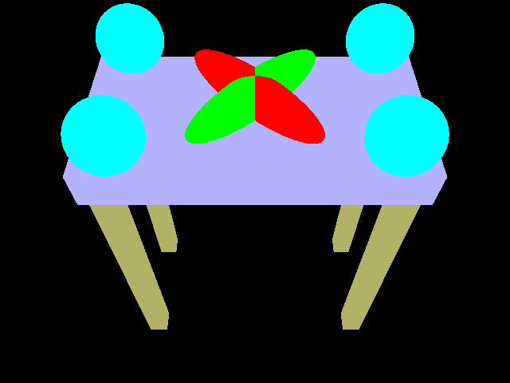
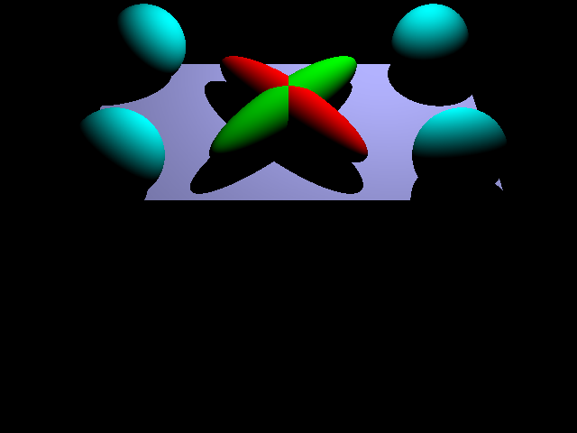
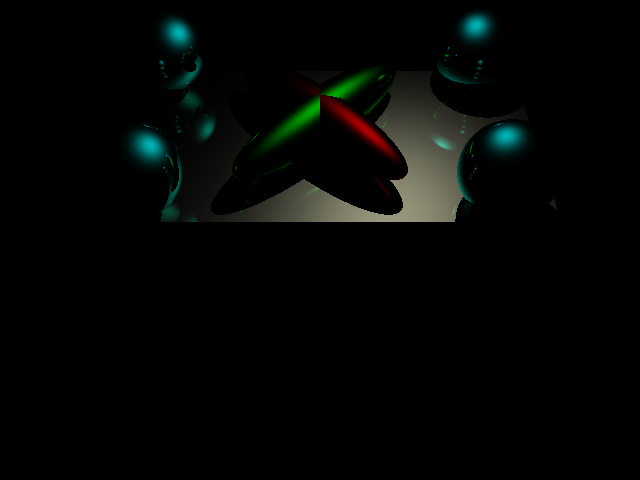
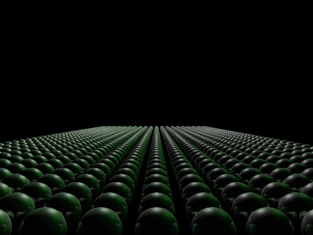
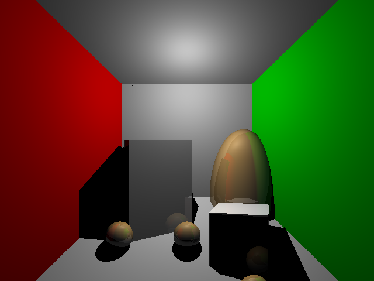
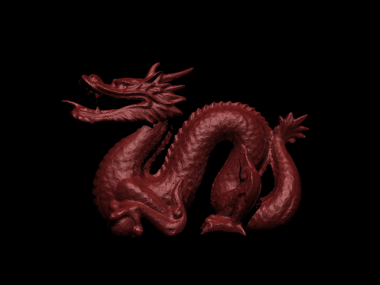

CSE 168 · UCSD · 2026
Assignment 1
Ray Tracing with OptiX
A GPU-accelerated ray tracer built on NVIDIA OptiX. Implements Blinn-Phong shading, recursive mirror reflections, ellipsoidal geometry via object-space transforms, and physically-based light attenuation.
Implementation Highlights
Three-Level BVH Acceleration
Triangles and spheres each have their own
GeometryGroup BVH, both merged under a root Group BVH — three BVHs total. Handles tens of thousands of triangles in the dragon scene efficiently.Ellipsoid Intersection
Each sphere stores its inverse model matrix. Ray is transformed to object space (
w=1 for points, w=0 for directions), solved against a unit sphere, normal brought back via (A⁻¹)ᵀ.Blinn-Phong Shading
Full
ka + kd + ks + ke material model. Diffuse via Lambert dot-product. Specular via half-vector H = normalize(L+V). Shadow rays gate both terms per light.Light Attenuation
Point lights attenuate with
1/(c₁ + c₂d + c₃d²), parsed from the attenuation scene command. Directional lights are unattenuated.Recursive Reflections
Surfaces with non-zero
ks spawn mirror rays via r = d − 2(d·n)n. Depth tracked in payload struct, capped at 5 bounces to prevent infinite recursion.Shadow Rays
One shadow ray per light per hit point. Point-light rays use
tmax = dist − ε to avoid over-shadowing. Epsilon offset on origin prevents self-intersection.Scene Commands Supported
- size, output, camera
- ambient, diffuse, specular, emission, shininess
- point, directional, attenuation, maxdepth
- maxverts, vertex, tri, sphere
- pushTransform, popTransform
- translate, rotate, scale
Implementation Notes
Normals use the inverse-transpose (n′ = (A⁻¹)ᵀ n) to stay perpendicular under non-uniform scale. Sphere bounding boxes are computed by transforming all 8 object-space AABB corners to world space and taking min/max — giving tight, correct bounds for the BVH. OptiX trace depth is 12; shader caps reflections at 5 bounces.
Rendered Images

Scene 04A
Ambient Only
Table scene with ambient-only materials. Flat colour pass showing the transform stack, pinwheel ellipsoids, and table geometry with no lighting computation.

Scene 04B
Diffuse Lighting
Same table scene with Lambertian diffuse shading. Light falloff across surfaces confirms correct normals on both the flat triangles and the transformed ellipsoids.

Scene 04C
Specular + Recursive Reflections
Table scene with specular materials and mirror reflections active. Cyan spheres reflect each other and the ellipses — multi-bounce recursion visible on sphere surfaces.

Scene 04D
Specular Highlights
Table scene testing Blinn-Phong specular term. Bright highlights on the table surface and ellipsoids show the half-vector specular calculation working correctly.

Scene 05
Infinite Sphere Grid
A vast grid of dark reflective spheres receding to the horizon. Tests the BVH with a large primitive count and shows inter-sphere recursive reflections.

Scene 06
Cornell Box
Classic Cornell box with red and green walls. Point light with quadratic attenuation, directional fill, mixed triangle and sphere geometry, and an egg-shaped ellipsoid.

Scene 07
Dragon Mesh
High-polygon triangle mesh of a dragon rendered with diffuse shading and a directional light. Demonstrates the two-level BVH handling tens of thousands of triangles.